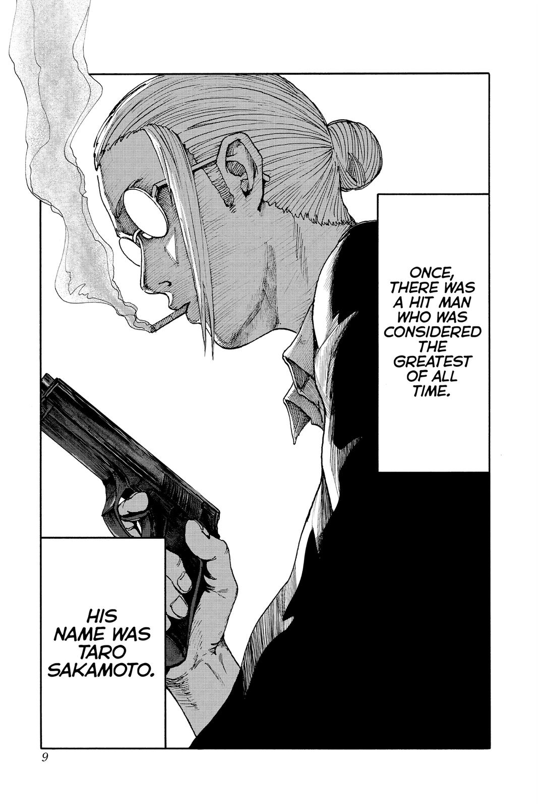

Sakamoto Days
by Yuto Suzuki
Synopsis
Taro Sakamoto, a legendary former hitman who has settled into a peaceful family life, must protect his loved ones and his convenience store from dangerous assassins while proving that even a retired killer can live by his own rules.
Chapter 1: The Legendary Hitman

Taro Sakamoto was once the most feared hitman in the underworld. After falling in love, he left his dangerous life behind and became a husband, father, and convenience store owner. Although he has gained weight, his legendary skills remain unmatched.
His peaceful life takes an unexpected turn when Shin Asakura, a former hitman who can read minds, arrives and discovers that Sakamoto has changed his ways. As danger from the underworld draws closer, Sakamoto must protect his family and his shop while proving that even a retired assassin is still a force to be reckoned with.
— End of chapter —